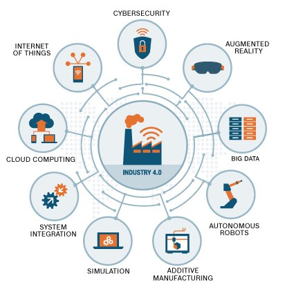

by Alexandre Pereira 77071 Francisco Ferreira 89294
Approaching the bright future of Manufacturing.
How can we ensure innovation, competitiveness, increased income and operational excellence? The answer, surprisingly, lies in manufacturing.
We are living revolution times and manufacturing appears to be a hot topic again, undergoing the industry’s greatest change in more than 100 years. So, our research looks forward to bright future of manufacturing, where the way we build and deliver the goods and products that fuel our economies and our lives will never be the same.
I'm here today to tell you that we are on the verge of another huge change, and that this change, surprisingly enough, is going to come from manufacturing, again. It will get us out of our growth slump and it will change radically the way globalization has been shaped over the last decade. I'm here to tell you about the amazing fourth manufacturing revolution that is currently underway.
After the innovation failure that decreases productivity through the internet and its new services, we have now an emerging new revolution that combines manufacturing with a large innovation technology, presenting to our world the fourth industrial revolution.
We are now experiencing another industrial revolution, our fourth, built on the Digital Revolution, representing new ways in which technology becomes embedded within societies and even the human body. The industrial revolution we’re experiencing now, commonly referred to as Fourth Industrial Revolution or Industry 4.0, is powered by advancements that include smart manufacturing, robotics, artificial intelligence, nanotechnology, the Internet of Things (IoT), and more.
What to expect?
Innovative Technologies are progressing in order stimulate and helping manufacturing. For instance, using robotics to do non-repetitive tasks and completing the workers is expected to achieve 25% of automation tasks, which lead to a growth around 20%. By 2019, it is prospective 50% of manufacturers have modernized their logistic network to leverage 3D printing, robotics, and cognitive computing to support innovative strategies.
In the future, is expected the factories will be smaller and agile, in order to get the customers closer. That will change the current trade flows, transforming East-to-West to Regional way, East-East and West-West. With that, China and other emerging countries won't be any more the world factories. Helping with preventing the issue related to the current model, since those countries will be richer and more expensive to produce. As what occurred on 2015, when Brazil and France have the same producing costs.
With In the next five years, the consumers in China inject more growth than the top 5 European markets together.
The expectation on the USA related with the employment is to increase on the next 5 five years, on 70% of industries, with 31% increasing 1-5% of the current number. But 10 % are expecting to decrease 1-5% of the actual number of employees. Those numbers show the workers should not be afraid of losing their jobs. Innovative Technologies are the complement to, not a replacement for, human workers, instead, it will be created more specialized work for maintenance and future upgrades, we'll be able to increase our output and increase the productivity in order to make the economy grow.
Economic prospects will be characterized by even more extensive trade and movement of goods, faster information transfer and data analysis, and new technology that helps manufacturers maximize customer value and profitability.
Concepts Definition
Tomorrow - What we should expect and what is rising for manufacturing..
Manufacturing - Produce on a large scale using machinery and technology.
Future Industry Goals - The goal of Industries by ensuring Innovation, Competitiveness, Increase Income and Operational Excellence.
Robotics - Re-creates the complex human critical tasks through capabilities like voice, data and image recognition.
Additive Manufacturing - Also known as 3D Printing, looks forward to maximizing mass production, achieving higher levels of accuracy and productivity.
Operational Excellence - The goal of organizations in order to be world class.
Industry 4.0 - Manufacturing revolution powered by Innovative Technologies and based on Digital Revolution.
Innovative Technologies - Futuristic approaches of how technology will be applied on manufacturing.
Augmented Reality - Virtual reality allowing the creation and test of products simulating the design process without wasting materials.
Smart Factories - Factories fulfilled with innovative technologies and driving advancements by the investments in smart sensors, cloud computing, and machine learning.
Machine Learning - Iterative algorithms developed, designed to learn continually and make optimized searches.
Industrial Internet of Things - Network of intelligent computers, devices, and objects that collect and share huge amounts of data, at far greater speeds.